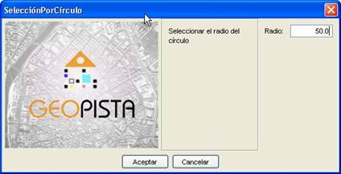

Herramientas de edición. Selección por círculo
 Selección por Círculo
Selección por Círculo
Esta herramienta permite seleccionar todas las entidades que intersecan un círculo dado. Consta de un único botón dentro del panel de herramientas de edición  , con el siguiente aspecto:
, con el siguiente aspecto:
Esta opción estará accesible para todos los usuarios del editor GIS.
El usuario selecciona la herramienta “Selección de Entidades” a través del botón correspondiente. A continuación se mostrará un panel que solicita al usuario el radio del círculo que delimitará el área de selección.

Cada vez que el usuario pulse con el ratón en el mapa se seleccionarán las entidades o features que intersecten con este círculo. Para que se mantengas selecciones anteriores el usuario tendrá que mantener pulsado el botón Mayúsculas, en caso contrario se perderán las selecciones anteriores. Por último se mostrarán remarcadas las entidades o features seleccionadas por la herramienta.
Únicamente se seleccionarán aquellas entidades que se encuentren en la capa que esté seleccionada.